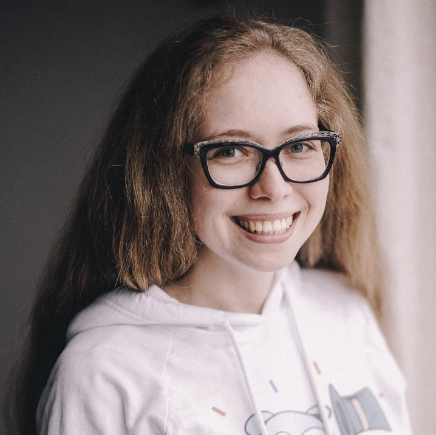

Introduction to Monitoring with Grafana
Marcus Olsson
Summary
As software becomes more and more complex, the need to understand how it performs in production becomes an
important part of software development. If you want to better understand your applications, this class is for you.
Detail
In this workshop, we'll cover the basics of monitoring, what to monitor, how to visualize it, and how to alert when
things go wrong. We'll also look at how to combine metrics with logs to troubleshoot production issues.
During the day, we'll talk about:
- Time series
- Time series databases
- Collecting metrics with Prometheus
- Effective monitoring (RED, USE, golden signals)
- Dashboard design
- Logs
You'll also learn how to use Grafana, an open source platform for monitoring and observability, to set up your
monitoring solution:
- Adding and configuring data sources
- Creating beautiful and functional dashboards
- Exploring logs with Loki
- Who this workshop is for:
- This workshop is meant for Software Developers, Site Reliability Engineers, Operators.
What you'll learn
After this workshop:
You'll have an understanding of how to monitor your software
You'll be able to use Grafana to create dashboards and alerts
You'll be able to use metrics and logs together to debug running software
Prerequisites:
Basic experience with web services.
Biography
Marcus Olsson is a Developer Advocate at Grafana Labs, the company behind Grafana. Before that he was consulting
teams on cloud native practices and infrastructure. He's also known to draw gophers and organize Go meetups.
Social media
Getting started with application observability
Elena Grahovac

Short description
Observability - one of the key properties for modern applications. Typically, when we talk about it, we mean logs,
metrics, and traces. However, according to the definition, observability is a measure that shows our ability to
understand the current state of the system or any component of the system. In this workshop, we will see how
applications themselves can contribute to observability of the whole system.
Details
We will discuss the importance of observability and the role of application in building observable systems. During
the workshop, we will focus on practical examples and cases. We will start with an application that doesn’t provide
any observability and will see how to improve the situation step-by-step. At the end of the workshop, our
application will achieve a significantly better level of observability. The ideas and techniques of this workshop
are applicable to different tools but for simplicity, we will use DataDog to analyze the data. If you would like to
work with your own code, feel free to bring it to the workshop. Otherwise, you will be provided with a typical web
service.
Workshop plan
- Observability oveview
- Three main states of application: starting, stopping, running
- The concept of application performance management
- Error and panic handling
- Logging levels and how they might help
- Log message format and useful tags
- Logger performance. How to choose the right tool?
- Traces and metrics, the OpenTelemetry (OpenTracing + OpenCencus) project and its current state
- How much data we might need?
- Distributed tracing techniques
- What we can measure inside the application?
- How to test metrics locally?
- How to analyze the data we collected?
- Practical observability analysis with DataDog
Prerequisites
- Source code examples will be provided in Go, some basic knowledge of the Go programming language is expected
- If you would like to join this workshop as a participant, you need to install:
- A stable version Go (the latest stable version is recommended)
- An IDE or editor to be able to write in Go
- Docker Community Edition (as a part of the workshop, we are going to work with containers)
- During the workshop, we will also install and set up some additional tools and libraries
Bio
Elena is an Engineering Manager at GetYourGuide and a co-hosts of the GolangShow podcast. With 12+ years of overall
experience in IT, she values DevOps culture and passionate about automation, software architecture and site
reliability engineering topics.
Social media
Github: github.com/rumyantseva
Twitter: twitter.com/webdeva